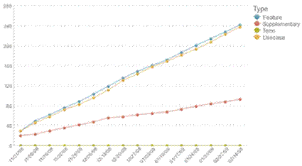

Purpose
Requirements churn refers to changes to the requirements after they have been implemented (especially those that have
significant impact on architectural decisions), indicating their stability. Some changes are inevitable as the team's
understanding of the problem domain is refined, or due to changes in the environment. However, poorly defined
requirements are another cause of churn, and they can seriously impact the project schedule. Excessive changes to the
requirements, especially late in the lifecycle, can lead to failed or canceled projects. Less extreme cases can result
in schedule slippage, reduced scope, increased cost, or low customer satisfaction.
Definition
Count: Total number of changes to requirements in a given period. Group by type (e.g. Feature, Supplementary, Use Case)
Considering measuring percentage of changes as well to gain a better understanding of the size of changes compared to
the total number of changes.
To monitor the amount of churn in each component, group requirements changes by component.
Analysis
A good way to monitor requirements churn is to use a trend line. Plot the number of changes on the Y axis, and the
iterations on the X axis.
Expected trend – Generally, changes are easier to deal with early in the project, so the ideal trend
line would decrease over time. This indicates that the team is working to clarify requirements in each iteration and
has a good understanding of the problem domain.Changes are expected in beginning of lifecycle while system is evolving.
Change should be stabilized and start to decrease during the construction phase.
Upward slope - The upward slope signifies increasing requirements volatility. The team should analyze
the source and rationale of each change. Primary causes of requirements change and possible solutions are:
-
Changes in project knowledge – revisit the requirement and related items and update based on the new knowledge
-
Conflicts between needs, goals, and requirements – brainstorm and prioritize the requirements in order to correct
and compromise the discrepancy.
-
Changes in the organizational level – developing iteratively will help the team manage volatility
and achieve concurrence on the requirements
-
Unclear or too specific requirements – Requirements should be clarified and solidified but flexible enough to
accommodate the architectural design. Techniques like defining common terminologies, User Story or Storyboard and
Effective Requirement Reviews should be used.
-
IUnrealistic requirements – develop a product representation such as a prototype or simulation to
detect unrealistic requirements as early as possible
-
Inappropriate set of stakeholders – learn more on techniques in Identify Stakeholders
Dramatic upward slope at the end of the lifecycle - Any increase in the instability of requirements in
the latter half of the lifecycle is a warning that there is a poor understanding of business needs or software
requirements. This may impact the team's ability to deliver the needed capabilities with quality and predictability. It
can also introduce serious problems for maintainability. Confirm that a requirements management process is in place
that is well understood by the team and stakeholders.
If impact is dramatic, the release date or scope may need adjustment. Excessive requirements churn requires corrective
action and often indicates a broken requirements management process.
For teams adopting Iterative Development, requirements churn is expected in the early to middle phases of the
lifecycle. This demonstrates that the team is getting feedback from their stakeholders. However, churn that remains
high throughout the remainder of the lifecycle is an indication that there is a lack of agreement on the system
requirements. However, requirement churn that is caused by foreseeing the future system too far ahead or in too
much detail could create unnecessary requirement churn. Mitigate this by not planning too far ahead or having
short release cycles.

Requirements Churn Chart, where the vertical axis represents the total number of changes
Frequency and reporting
Requirements churn should be monitored in each iteration to help identify trends. When results indicate a problem, the
team should report results to stakeholders in order to take any necessary corrective actions.
Collection and reporting tools
Data can be collected from various tools such as IBM® Rational® ReqPro®, IBM® Rational® Team Concert®, IBM® Rational®
DOORS®, and IBM® Rational® Requirements Composer®. IBM® Rational® Insight® reports this metric.
Assumptions and prerequisites
-
The team must determine what constitutes a change. This can be a subtle difference, in that some changes are simply
clarification or further elaboration.
-
All changes are documented, and the date of change noted
Pitfalls, advice, and countermeasures
-
A requirement is considered "implemented" as soon as it is tested and delivered for integration
-
When release cycles are shortened (reducing the scope of each release) their is less risk of requirements churn.
|